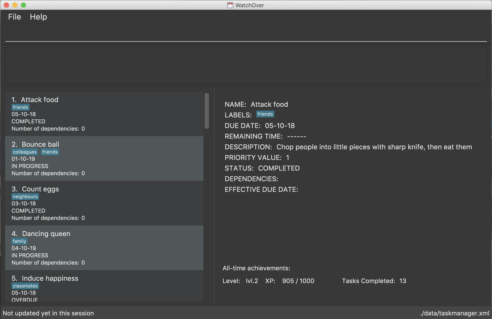
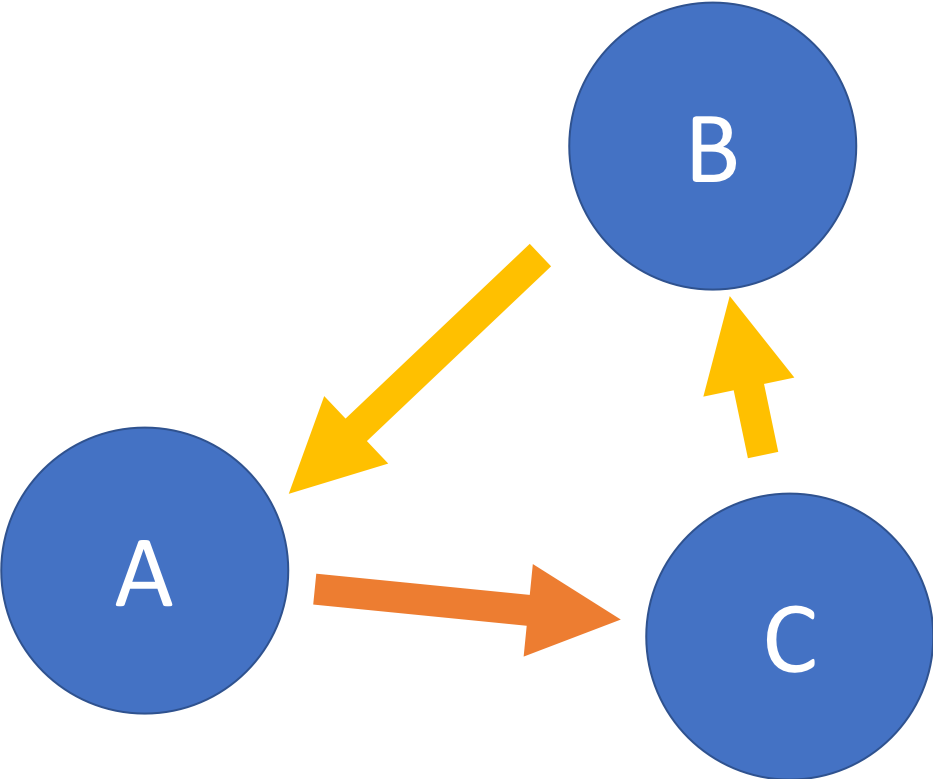
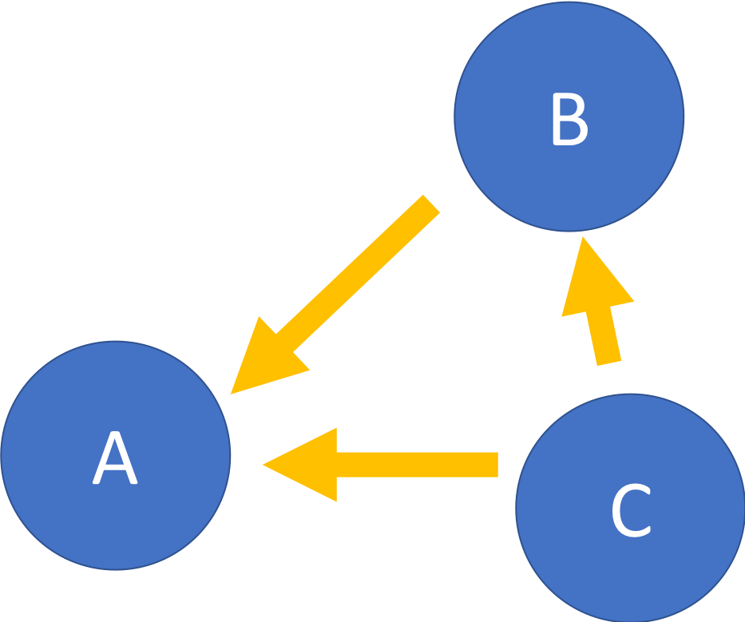

By: Team F11-3 Since: Aug 2018 Licence: MIT
- 1. Introduction
- 2. Quick Start
- 3. Features
- 3.1. Note on Task fields
- 3.2. System Commands
- 3.3. Task Management
- 3.3.1. Adding a Task:
add - 3.3.2. Deleting a Task:
delete - 3.3.3. Editing a Task:
edit - 3.3.4. Adding/Removing a dependency to a Task:
dependency - 3.3.5. Completing a Task:
complete - 3.3.6. Listing Tasks:
list - 3.3.7. Search for Tasks by Keyword:
find - 3.3.8. Selecting a person :
select - 3.3.9. Listing Tasks by topological order:
topoorder
- 3.3.1. Adding a Task:
- 3.4. Gamification
- 4. FAQ
- 5. Command Summary
- 6. Features to be included by v2.0
1. Introduction
WatchOver is for those who prefer to use a desktop app for managing tasks. More importantly, WatchOver is optimized for those who prefer to work with a Command Line Interface (CLI) while still having the benefits of a Graphical User Interface (GUI). If you can type fast, WatchOver enables you to manage your tasks faster than traditional GUI apps. Interested? Jump to the Section 2, “Quick Start” to get started. Enjoy!
2. Quick Start
-
Ensure you have Java version
9or later installed in your Computer. -
Download the latest
watchover.jarhere. -
Copy the file to the folder you want to use as the home folder for your task manager.
-
Double-click the file to start the app. The GUI should appear in a few seconds.
 -
Type the command in the command box and press Enter to execute it.
e.g. typinghelpand pressing Enter will open the help window. -
Some example commands you can try:
-
list: lists all tasks -
addn/Do CS2103 tutorial t/02-12-18 1330 p/5 d/Do it for Jelena l/tutorial: adds a task namedDo 2103 tutorialto the task manager. -
delete3: deletes the 3rd task shown in the current list -
exit: exits the app -
dependency 1 2: adds a dependency between 1st task show in current list and 2nd task shown in current list, where 1st task is dependent on the second task.
-
-
Refer to Section 3, “Features” for details of each command.
3. Features
Command Format
-
Words in
UPPER_CASEare the parameters to be supplied by the user e.g. inadd n/NAME,NAMEis a parameter which can be used asadd n/Count eggs. -
Items in square brackets are optional e.g
n/NAME [l/LABEL]can be used asn/Count eggs l/tutorialor asn/Count eggs. -
Items with
… after them can be used multiple times including zero times e.g.[l/LABEL]…can be used asl/tutorial,l/tutorial l/skippedetc. -
Parameters can be in any order e.g. if the command specifies
n/NAME p/PRIORITY_VALUE,p/PRIORITY_VALUE n/NAMEis also acceptable. -
+Exampleindicates positive example while-Exampleindicates negative example.
3.1. Note on Task fields
A task has various fields. Some of these fields can be edited directly, while the rest are derived from the fields that can be edited.
3.1.1. Editable fields
-
Name: the name of a task
-
Due Date: the date and time when a task is due
-
Priority: the priority value that a task has
-
Description: additional description regarding the task
-
Labels: a list of labels that can be used to classify/identify the task
3.1.2. Derived fields
-
Remaining time: the time remaining, from the current time, until the Due Date of the task.
-
Status: the current status of the task, depending on whether it has been completed or not. It is denoted by either "IN PROGRESS", "COMPLETED" or "OVERDUE".
-
Effective Due Date: the earliest due date among all tasks directly or indirectly dependent on the task
3.2. System Commands
3.2.1. Viewing help: help
Displays and explains commonly used commands.
Format: help
3.2.2. Undoing the previously command: undo
Reverses the most recent command.
Format: undo
3.2.3. Redoing the previously undone command: redo
Reverses the most recent undo command.
Format: redo
3.2.4. Listing entered commands: history
Lists all the commands that you have entered in reverse chronological order.
Format: history
3.2.5. Clearing all entries : clear
Clears all entries from the task manager.
Format: clear
3.2.6. Exiting the program: exit
Exits the program.
Format: exit
3.3. Task Management
3.3.1. Adding a Task: add
Adds a task to the task manager.
Format:
add n/TASK_NAME t/DUE_DATE p/PRIORITY_VALUE [d/detailed description] [l/LABEL]
Date Format: dd-MM-yy or dd-MM-yy HHmm or dd-MM-yyyy or dd-MM-yyyy HHmm. A missing HHmm field will cause time to
be interpreted as the start of the day, i.e 00:00.
On task creation, the task’s INDEX is shown as such:
Task <INDEX>, <TASK_NAME> was created.+Example:
add n/complete milestone t/14-09-19 p/99 d/a detailed description l/CS2103
add n/complete milestone t/14-09-19 1320 p/9 d/a detailed description l/CS2103
-Example:
add n/complete milestone t/2018/09/14 p/important
add n/complete milestone t/2018/09/14 p/-4
| Duplicated tasks are not allowed in the task manager. Duplicated tasks are defined as tasks with the same name and due date or tasks with the same name and priority value. |
3.3.2. Deleting a Task: delete
Deletes a task and task dependencies to it from the task manager
Format: delete INDEX
+Example: delete 1
-Example: delete task
3.3.3. Editing a Task: edit
Edits a task in the task manager
Format:
edit INDEX [t/DUE_DATE] [p/PRIORITY_VALUE] [d/detailed description] [l/LABEL]
+Example:
edit 1 t/18-12-19 d/an updated detailed description of what needs to be done
-Example:
edit complete milestone t/2018.09.18 d/a updated detailed description of what needs to be done
3.3.4. Adding/Removing a dependency to a Task: dependency
Adds/removes a dependency of a task dependant to the task dependee.
For a given scenario where task A is dependent on task B, task A is defined as the dependent task while task B is defined as the dependee task.
The dependency is added if it already exists amd removed if it does not.
Format:
dependency INDEX_DEPENDANT INDEX_DEPENDEE
+Example:
dependency 1 2
-Example:
dependency 1
dependency a b
|
There are several cases when a dependency cannot be created: 1) The dependency introduces a cyclic dependency A cyclic dependency is defined as a dependency path from a task back to the task itself.

In the diagram above, an additional dependency from 2) The dependency is added from a COMPLETED task to an IN-PROGRESS or OVERDUE task The dependency will violate the notion of a completed task as tasks can only be completed if all the tasks that it depends on are completed. |
3.3.5. Completing a Task: complete
Completes task(s) in the task manager
Format: complete INDEX or complete t/LABEL
+Examples:
complete 1
complete l/urgent
-Example:
complete 1 l/urgent (Behavior is not clear)
-
Completion via label is case-insensitive
-
You are unable to complete tasks if they have unfulfilled dependencies.
-
You can complete multiple tasks at once through the use of the format complete
l/LABEL -
Note that the label needs to be valid. Validity for a label,
x, is defined by the following condition:-
Has at least one task which is labelled
xand status is not "COMPLETED"
-
-
On completion of tasks that leads to a level-up, the levelling up would be reported.
Extended Examples
WatchOver utilises a sophisticated dependency checking feature to reduce the
amount of accidental completion of tasks. For example, you need to finish your tutorial before
you can submit tutorial. In order to better understand this feature, below are some
extended examples to showcase dependency checking with Complete.
Premise, there are 5 tasks, where Task X is dependent on Task Y, Task Y
is dependent of Task Z, and Task A is dependent on Task X.
Task Z is already completed.
add n/Task X t/02-12-18 1330 p/5 d/X l/setOne add n/Task Y t/02-12-18 1330 p/5 d/X l/setOne add n/Task Z t/02-12-18 1330 p/5 d/X l/setOne add n/Task A t/02-12-18 1330 p/5 d/X l/setTwo add n/Task B t/02-12-18 1330 p/5 d/X l/setTwo dependency 1 2 dependency 2 3 complete 3 dependency 4 1
Task X is referred to via index 1, Task Y is referred to via index 2, Task Z is referred to via index 3, Task A is referred to via index 4, Task B is referred to via index 5
+Example:
complete 2
Explanation: The completion of Task Y is valid as all its dependencies are completed.
+Example:
complete l/setOne
Explanation: Order of tasks completed in a batch completion does not matter as long as there are no unfulfilled dependencies after all tasks are completed.
-Example:
complete 1
Explanation: Task X is dependent on Task Y which is not completed yet.
-Example:
complete l/setTwo
Explanation: Task A is dependent on Task X which will not be completed after the batch completion.
3.3.6. Listing Tasks: list
Shows a list of all tasks.
Format:
list [f/FILTER], where FILTER must be any of the following:
-
today: Lists tasks that are due before the end of the day -
week: Lists tasks that are due before the end of the week -
month: Lists tasks that are due before the end of the month -
doable: Lists tasks that do not have any uncompleted dependencies (or no dependencies)
+Example:
list
+Example:
list f/today
-Example:
list f/alltime
1. finish math tutorial DueDate: 01-10-18 1300 Description: before exam PriorityValue: 2 Status: IN PROGRESS
2. Attack Food DueDate: 01-10-18 Description: what did food do PriorityValue: 88 Status: COMPLETED
3. Induce Happiness DueDate: 03-10-18 Description: conditions of happiness PriorityValue: 3 Status: OVERDUE3.3.7. Search for Tasks by Keyword: find
Finds tasks whose names contain any of the given keywords.
Format: find KEYWORD [MORE_KEYWORDS]
+Example: find happiness
-Example: find OVERDUE
3.3.8. Selecting a person : select
Selects the task identified by the index number used in the displayed task list.
Format: select INDEX
Examples:
-
list
select 2
Selects the 2nd task in the task manager. -
find
select 1
Selects the 1st task in the results of thefindcommand.
3.3.9. Listing Tasks by topological order: topoorder
Shows a list of uncompleted tasks by their topological order in the CLI window.
It defines a possible valid sequence of tasks to tackle given existing task dependency constraints.
Example:
-
topoorder
|
Topological order is a linear ordering of vertices such that for every vertex u to vertex v, u comes before v in the ordering. (Source: wikipedia) In the context of our application, it is a linear ordering of |
|

Diagram of a possible dependency graph A topological order of this graph is: [A, B, C] |
3.4. Gamification
3.4.1. Display achievements across a time period: achievements
Displays the cumulative achievements of a user across a specified time period on the GUI.
Such achievements include current level, xp earned and number of tasks completed across that time period.
Users automatically level up on gaining enough xp to reach the next level. The maximum level is capped at lvl.5.
Format: achievements TIME_SPAN, a valid TIME_SPAN may take the value of all-time, today, or this week.
+Example: achievements all-time
+Example: achievements today
+Example: achievements this week
-Example: achievements all time
-Example: achievements TODAY
|
Today and this week’s achievements assume users do not time travel. Once a day/week is passed, its achievements cannot be retrieved again by achievements today/this week if the user ever
comes back from the future.
|
| If under the unlikely circumstances, the increased xp or number of tasks completed is expected to exceed 1000000000, these fields will no longer be updated. |
3.4.2. Change game mode: mode
Changes the game mode and game difficulty.
The game mode determines the method of calculating XP, whereas the difficulty scales the amounts awarded.
Note: The game mode command is not affected by undo/redo, because it does not change the state of the tasks. To reverse an unintended game mode change, simply change again to the desired game mode.
Game modes available
Flat
The Flat mode awards a constant amount of xp for a task completed on time, and a constant but lower amount of xp for a task completed after the deadline (with status OVERDUE). This is the most basic mode, and is enabled by default. Higher difficulties award a greater reward for tasks completed on time, but also give less reward for overdue tasks.
Decreasing
The Decreasing mode awards a maximum amount of xp for a task completed before the deadline, with the amount awarded decreasing over time to a minimum at or past the deadline. This mode is recommended for procrastinators who want WatchOver to reward early completion of deadlines. Setting a higher difficulty level lowers the minimum, making procrastination more costly.
Increasing
The Increasing mode awards a base amount of xp for tasks, which increases as the deadline nears and peaks when the deadline is reached. This mode can be considered the opposite of the Decreasing mode. It is recommended for motivated users who want the xp awards to reflect the urgency of the task; the reasoning being that if the current amount of xp has not yet been able to make the task 'worth it' to complete, then the amount should increase. Higher difficulties increase the magnitude and duration over which the xp increases.
Priority
The Priority mode leaves the xp decision up to the user. It is identical to the Flat mode for tasks with priority value 10 on all difficulty levels, however, different priority values will linearly scale the awarded xp. For example, a task with priority value 5 will only award half the xp of an equivalent task with priority value 10.
Format: mode [GAME_MODE] [Optional: GAME_DIFFICULTY], where:
GAME_MODE can be flat (default), decreasing, increasing, priority;
GAME_DIFFICULTY can be easy, medium (default), hard, extreme.
+Example: mode flat
+Example: mode decreasing hard
-Example: mode edna
4. FAQ
Q: How do I transfer my data to another Computer?
A: Install the app in the other computer and overwrite the empty data file it creates with the file that contains the data of your previous WatchOver folder.
5. Command Summary
-
System Commands
-
Help :
help -
Undo :
undo -
Redo :
redo -
History :
history -
Clear :
clear -
Exit :
exit
-
-
Task Management
-
Add :
add n/TASK_NAME t/DUE_DATE p/PRIORITY_VALUE d/DESCRIPTION [l/LABEL] -
Delete :
delete INDEX -
Dependency :
dependency INDEX_DEPENDANT INDEX_DEPENDEE -
Edit :
edit INDEX [t/DUE_DATE] [p/PRIORITY_VALUE] [d/detailed description] [l/LABEL] -
Complete :
complete INDEXorcomplete l/LABEL -
List :
list -
Find :
find KEYWORD -
Select :
select INDEX -
Achievements :
achievements TIME_SPAN -
Topological order :
topoorder
-
6. Features to be included by v2.0
6.1. Complete displays a organic random congratulatory message upon task completion.
-
Current implementation displays a generic standard congratulatory message/message of positive affirmation.
-
Completed Tasks should be automatically hidden from view.
-